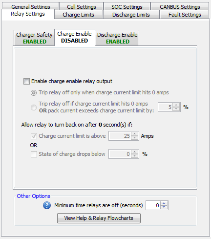

This relay will be driven low until the CCL (Charge Current Limit) dips to 0 at which point it will float high (there is no pull-up resistor on this line). This relay can re-engage based on either State of Charge (SOC) or Charge Current Limit (CCL).
Note: This is not the same as the charger safety relay.
NOTE: Enabling this relay will extend the amount of time it takes for the BMS to set a Charge Limit Enforcement fault once the Charge Current Limit hits 0A to approximately 5 seconds. This is because the BMS is assuming it is controlling an application in an ON / OFF style where application may take a moment to turn off.
**Click here for a functional flowchart of how the relay works.
| < Discharge Enable Functional Flowchart | Charge Enable Functional Flowchart > |